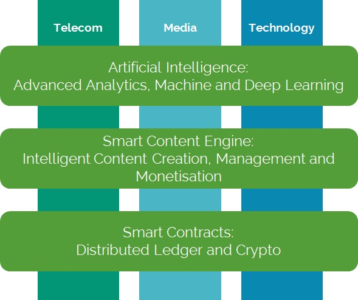
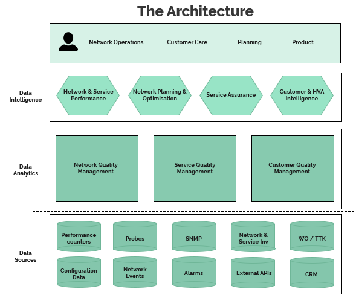
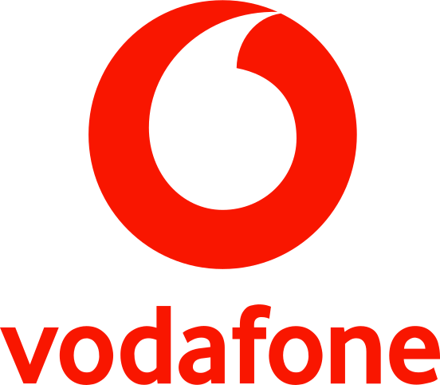
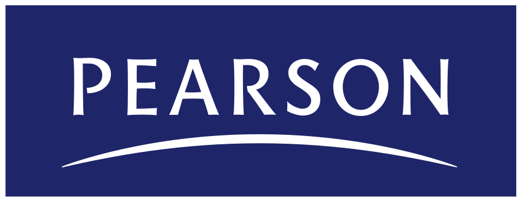

SDN & NFV
Pioneering Software Defined Networking (SDN) and Network Function Virtualisation (NFV) solutions to help businesses reduce costs and increase network performance
Aqovia are leading experts in delivering bespoke SDN and NFV solutions, leveraging cutting edge technology to help automate your work activities. Our specialist team work with you to create the most agile, reliable and cost-effective solution to fit your business.
Download data sheetWhy use a SDN - NFV solution?
Most technology, media and telecom businesses still operate at a level where computers offer very little assistance in work activities. Humans remain in control of all decisions and actions, which has an impact on the time and cost spent on complex activities.
Providing automated applications can not only increase revenue and reduce costs but also vastly improve the quality of experience.
SDN and NFV are complementary approaches, which both aim to advance a software-based approach to networking.
How it works
SDN is a broad term that describes the separation of the management, control and data-forwarding planes of networks.
While SDN is a critical step on the path to a modernised network, many services are still tied to the underlying hardware.
NFV focuses on optimising the network services themselves and decouples the network function from the hardware, virtualising it. This allows it to be run in a virtual machine on any compute platform, where it can self-manage.
The combination of SDN and NFV enables autonomous management, network complexity reduction and the dynamic provisioning of network services such as firewalls and load balancers. This reduces CapEx and Opex and allows service providers to create and charge for new specialised network services.

Area of expertise
The Aqovia SDN and NFV solution offer a light touch integration based on a top-down, value-based approach, using three key areas of expertise:
- Pedigree of Software Development excellence
- Global WAN Network rollout and optimisation
- Business Intelligence Analysis
The architecture behind it
The solution is based on a scalable architecture allowing the collection, processing and enrichment and visualisation of Network, Service and Customer Quality processes.
The benefits
SDN and NFV are equally critical parts of a modern virtual network and the benefits for Cloud service providers, Telcos and Enterprise network operators to:
- Reduce Network Capex and Opex
- Increase Network agility
- Increase velocity of go-to-market campaigns
- Data-driven identification of new revenue streams
- Reduce operational complexity
- Increase efficiency of computing, storage & resource time
Our leading clients
- 
- 